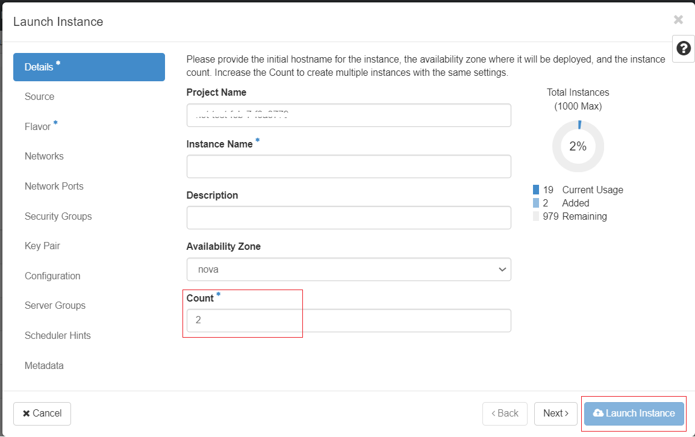
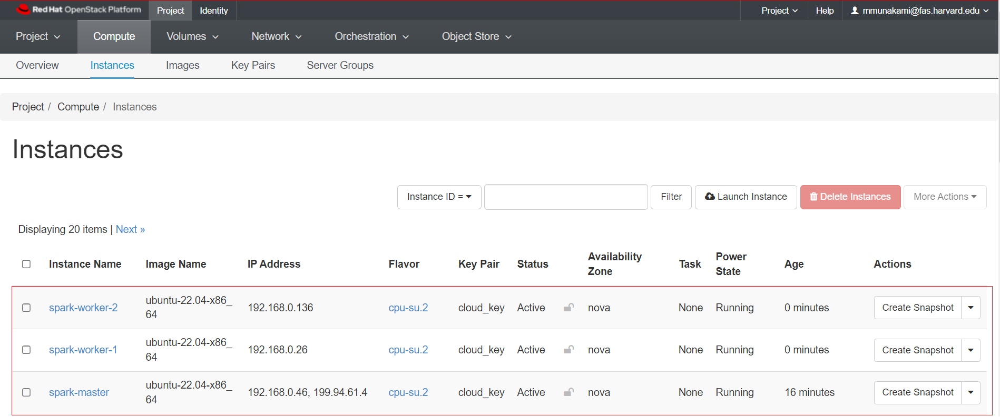
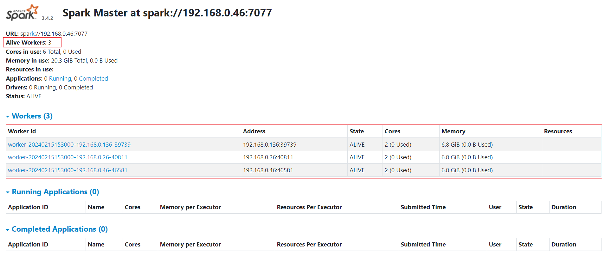
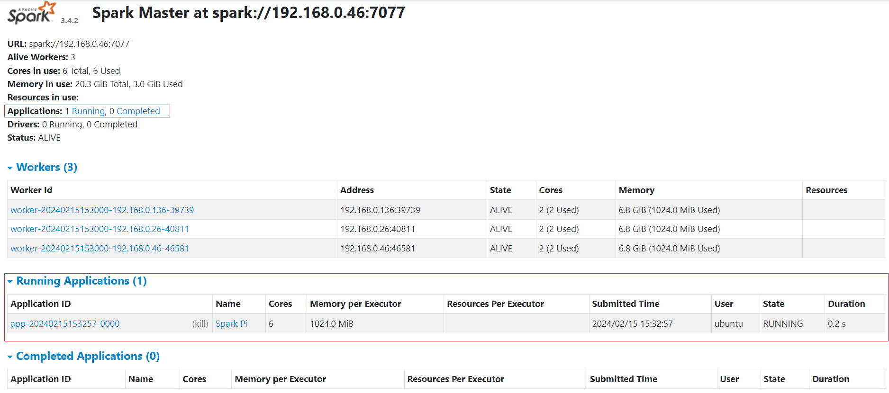
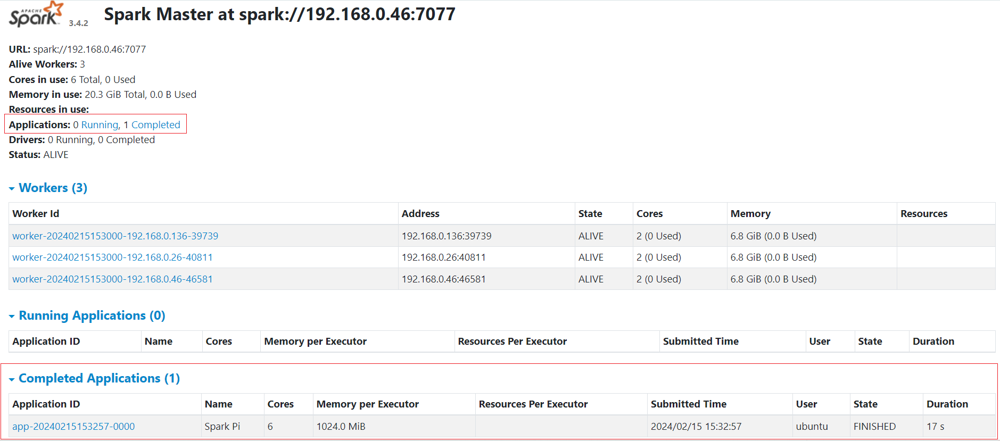

Apache Spark Cluster Setup on NERC OpenStack
Apache Spark Overview
Apache Spark is increasingly recognized as the primary analysis suite for big data, particularly among Python users. Spark offers a robust Python API and includes several valuable built-in libraries such as MLlib for machine learning and Spark Streaming for real-time analysis. In contrast to Apache Hadoop, Spark performs most computations in main memory boosting the performance.
Many modern computational tasks utilize the MapReduce parallel paradigm. This computational process comprises two stages: Map and Reduce. Before task execution, all data is distributed across the nodes of the cluster. During the "Map" stage, the master node dispatches the executable task to the other nodes, and each worker processes its respective data. The subsequent step is "Reduce" that involves the master node collecting all results from the workers and generating final results based on the workers' outcomes. Apache Spark also implements this model of computations so it provides Big Data Processing abilities.
Apache Spark Cluster Setup
To get a Spark standalone cluster up and running manually, all you need to do is spawn some VMs and start Spark as master on one of them and worker on the others. They will automatically form a cluster that you can connect to/from Python, Java, and Scala applications using the IP address of the master VM.
Setup a Master VM
-
To create a master VM for the first time, ensure that the "Image" dropdown option is selected. In this example, we selected ubuntu-22.04-x86_64 and the
cpu-su.2flavor is being used. -
Make sure you have added rules in the Security Groups to allow ssh using Port 22 access to the instance.
-
Assign a Floating IP to your new instance so that you will be able to ssh into this machine:
ssh ubuntu@<Floating-IP> -A -i <Path_To_Your_Private_Key>For example:
ssh ubuntu@199.94.61.4 -A -i cloud.key -
Upon successfully accessing the machine, execute the following dependencies:
sudo apt-get -y update sudo apt install default-jre -y -
Download and install Scala:
wget https://downloads.lightbend.com/scala/2.13.10/scala-2.13.10.deb sudo dpkg -i scala-2.13.10.deb sudo apt-get install scalaNote
Installing Scala means installing various command-line tools such as the Scala compiler and build tools.
-
Download and unpack Apache Spark:
SPARK_VERSION="3.4.2" APACHE_MIRROR="dlcdn.apache.org" wget https://$APACHE_MIRROR/spark/spark-$SPARK_VERSION/spark-$SPARK_VERSION-bin-hadoop3-scala2.13.tgz sudo tar -zxvf spark-$SPARK_VERSION-bin-hadoop3-scala2.13.tgz sudo cp -far spark-$SPARK_VERSION-bin-hadoop3-scala2.13 /usr/local/sparkVery Important Note
Please ensure you are using the latest Spark version by modifying the
SPARK_VERSIONin the above script. Additionally, verify that the version exists on theAPACHE_MIRRORwebsite. Please note the value ofSPARK_VERSIONas you will need it during Preparing Jobs for Execution and Examination. -
Create an SSH/RSA Key by running
ssh-keygen -t rsawithout using any passphrase:ssh-keygen -t rsa Generating public/private rsa key pair. Enter file in which to save the key (/home/ubuntu/.ssh/id_rsa): Enter passphrase (empty for no passphrase): Enter same passphrase again: Your identification has been saved in /home/ubuntu/.ssh/id_rsa Your public key has been saved in /home/ubuntu/.ssh/id_rsa.pub The key fingerprint is: SHA256:8i/TVSCfrkdV4+Jyqc00RoZZFSHNj8C0QugmBa7RX7U ubuntu@spark-master The key's randomart image is: +---[RSA 3072]----+ | .. ..o..++o| | o o.. +o.+.| | . +o .o=+.oo| | +.oo +o++..| | o EoS .+oo | | . o .+B | | .. +O . | | o.o..o | | o.. | +----[SHA256]-----+ -
Copy and append the contents of SSH public key i.e.
~/.ssh/id_rsa.pubto the~/.ssh/authorized_keysfile.
Create a Volume Snapshot of the master VM
-
Once you're logged in to NERC's Horizon dashboard. You need to Shut Off the master vm before creating a volume snapshot.
Click Action -> Shut Off Instance.
Status will change to
Shutoff. -
Then, create a snapshot of its attached volume by clicking on the "Create snapshot" from the Project -> Volumes -> Volumes as described here.
Create Two Worker Instances from the Volume Snapshot
-
Once a snapshot is created and is in "Available" status, you can view and manage it under the Volumes menu in the Horizon dashboard under Volume Snapshots.
Navigate to Project -> Volumes -> Snapshots.
-
You have the option to directly launch this volume as an instance by clicking on the arrow next to "Create Volume" and selecting "Launch as Instance".
NOTE: Specify Count: 2 to launch 2 instances using the volume snapshot as shown below:

Naming, Security Group and Flavor for Worker Nodes
You can specify the "Instance Name" as "spark-worker", and for each instance, it will automatically append incremental values at the end, such as
spark-worker-1andspark-worker-2. Also, make sure you have attached the Security Groups to allow ssh using Port 22 access to the worker instances.
Additionally, during launch, you will have the option to choose your preferred flavor for the worker nodes, which can differ from the master VM based on your computational requirements.
-
Navigate to Project -> Compute -> Instances.
-
Restart the shutdown master VM, click Action -> Start Instance.
-
The final set up for our Spark cluster looks like this, with 1 master node and 2 worker nodes:

Configure Spark on the Master VM
-
SSH login into the master VM again.
-
Update the
/etc/hostsfile to specify all three hostnames with their corresponding internal IP addresses.sudo nano /etc/hostsEnsure all hosts are resolvable by adding them to
/etc/hosts. You can modify the following content specifying each VM's internal IP addresses and paste the updated content at the end of the/etc/hostsfile. Alternatively, you can usesudo cat >> /etc/hoststo append the content directly to the end of the/etc/hostsfile.<Master-Internal-IP> master <Worker1-Internal-IP> worker1 <Worker2-Internal-IP> worker2Very Important Note
Make sure to use
>>instead of>to avoid overwriting the existing content and append the new content at the end of the file.For example, the end of the
/etc/hostsfile looks like this:sudo cat /etc/hosts ... 192.168.0.46 master 192.168.0.26 worker1 192.168.0.136 worker2 -
Verify that you can SSH into both worker nodes by using
ssh worker1andssh worker2from the Spark master node's terminal. -
Copy the sample configuration file for the Spark:
cd /usr/local/spark/conf/ cp spark-env.sh.template spark-env.sh -
Update the environment variables file i.e.
spark-env.shto include the following information:export SPARK_MASTER_HOST='<Master-Internal-IP>' export JAVA_HOME=<Path_of_JAVA_installation>Environment Variables
Executing this command:
readlink -f $(which java)will display the path to the current Java setup in your VM. For example:/usr/lib/jvm/java-11-openjdk-amd64/bin/java, you need to remove the lastbin/javapart, i.e./usr/lib/jvm/java-11-openjdk-amd64, to set it as theJAVA_HOMEenvironment variable. Learn more about other Spark settings that can be configured through environment variables here.For example:
echo "export SPARK_MASTER_HOST='192.168.0.46'" >> spark-env.sh echo "export JAVA_HOME=/usr/lib/jvm/java-11-openjdk-amd64" >> spark-env.sh -
Source the changed environment variables file i.e.
spark-env.sh:source spark-env.sh -
Create a file named
slavesin the Spark configuration directory (i.e.,/usr/local/spark/conf/) that specifies all 3 hostnames (nodes) as specified in/etc/hosts:sudo cat slaves master worker1 worker2
Run the Spark cluster from the Master VM
-
SSH into the master VM again if you are not already logged in.
-
You need to run the Spark cluster from
/usr/local/spark:cd /usr/local/spark # Start all hosts (nodes) including master and workers ./sbin/start-all.shHow to Stop All Spark Cluster
To stop all of the Spark cluster nodes, execute
./sbin/stop-all.shcommand from/usr/local/spark.
Connect to the Spark WebUI
Apache Spark provides a suite of web user interfaces (WebUIs) that you can use to monitor the status and resource consumption of your Spark cluster.
Different types of Spark Web UI
Apache Spark provides different web UIs: Master web UI, Worker web UI, and Application web UI.
-
You can connect to the Master web UI using SSH Port Forwarding, aka SSH Tunneling i.e. Local Port Forwarding from your local machine's terminal by running:
ssh -N -L <Your_Preferred_Port>:localhost:8080 <User>@<Floating-IP> -i <Path_To_Your_Private_Key>Here, you can choose any port that is available on your machine as
<Your_Preferred_Port>and then master VM's assigned Floating IP as<Floating-IP>and associated Private Key pair attached to the VM as<Path_To_Your_Private_Key>.For example:
ssh -N -L 8080:localhost:8080 ubuntu@199.94.61.4 -i ~/.ssh/cloud.key -
Once the SSH Tunneling is successful, please do not close or stop the terminal where you are running the SSH Tunneling. Instead, log in to the Master web UI using your web browser:
http://localhost:<Your_Preferred_Port>i.e.http://localhost:8080.
The Master web UI offers an overview of the Spark cluster, showcasing the following details:
- Master URL and REST URL
- Available CPUs and memory for the Spark cluster
- Status and allocated resources for each worker
- Details on active and completed applications, including their status, resources, and duration
- Details on active and completed drivers, including their status and resources
The Master web UI appears as shown below when you navigate to http://localhost:<Your_Preferred_Port>
i.e. http://localhost:8080 from your web browser:

The Master web UI also provides an overview of the applications. Through the Master web UI, you can easily identify the allocated vCPU (Core) and memory resources for both the Spark cluster and individual applications.
Preparing Jobs for Execution and Examination
-
To run jobs from
/usr/local/spark, execute the following commands:cd /usr/local/spark SPARK_VERSION="3.4.2"Very Important Note
Please ensure you are using the same Spark version that you have downloaded and installed previously as the value of
SPARK_VERSIONin the above script. -
Single Node Job:
Let's quickly start to run a simple job:
./bin/spark-submit --driver-memory 2g --class org.apache.spark.examples.SparkPi examples/jars/spark-examples_2.13-$SPARK_VERSION.jar 50 -
Cluster Mode Job:
Let's submit a longer and more complex job with many tasks that will be distributed among the multi-node cluster, and then view the Master web UI:
./bin/spark-submit --class org.apache.spark.examples.SparkPi --master spark://master:7077 examples/jars/spark-examples_2.13-$SPARK_VERSION.jar 1000While the job is running, you will see a similar view on the Master web UI under the "Running Applications" section:

Once the job is completed, it will show up under the "Completed Applications" section on the Master web UI as shown below:
